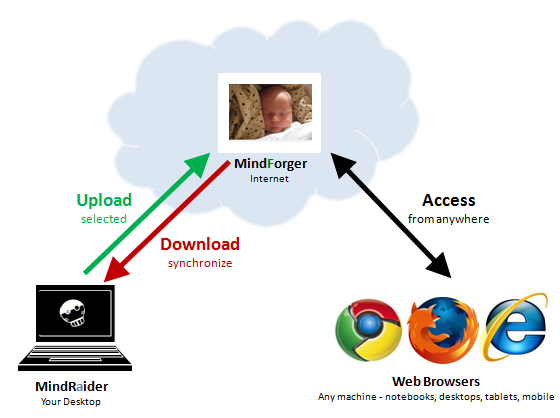
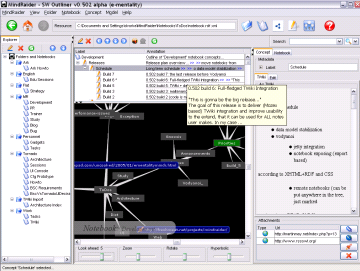
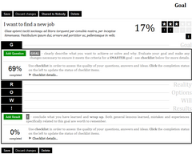
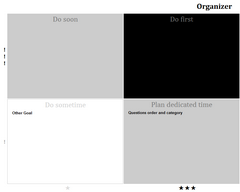
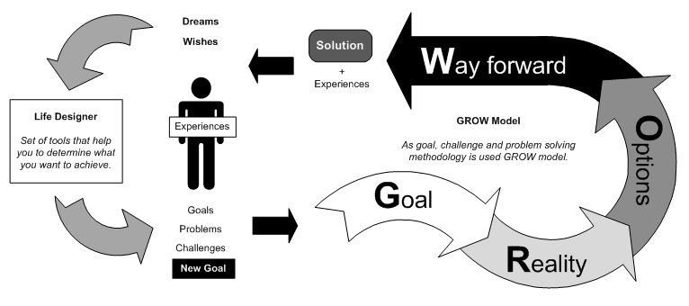
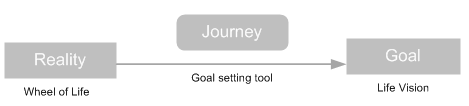
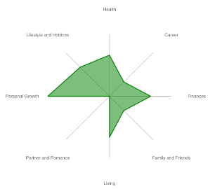
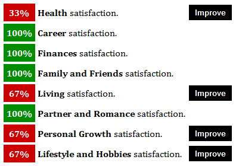
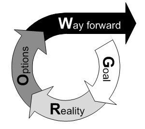

| MindRaider meets MindForger |
Introduction

Welcome MindRaider and MindForger users! This page describes the synergy of both tools and explains how you can benefit from their use.
If you want to skip introductions, go directly to Connecting MindRaider to MindForger section.
MF & MR outlines side by side :) MF & MR outlines side by side :) MF & MR outlines side by side :) MF & MR outlines side by side :) MF & MR outlines side by side :) MF & MR outlines side by side :)
MindRaider

MindRaider is personal notebook and outliner. If you are not MindRaider user yet, you can download it from mindforger.sf.net - it is free. MindRaider aims to help you in organization of your knowledge and associated web, local and realworld resources in a way that enables quick navigation, concise representation and inferencing.
MindForger
MindForger is an online utility aiming to help you in solving of your problems, achieving your goals and making your dreams true. It brings you a set of tools, techniques and methods that can help you to drive your life. MindForger bets on the fact that nobody else knows you better. Therefore only you can find the best solution in each and every situation. It is you who knows your skills, capabilities and resources. In addition neither other person nor a tool can benefit from your intuition and your subjective feelings. MindForger is versatile tool that may be used as:
- Outliner
- Life Designer
- Problem Solver
- Coaching Notebook
Who are potential MindForger users?
MindForger is a tool for people who want to switch or improve their careers, plan to start their own business, want to change something or have more in their life, feel something is missing, look to improve their health and fitness or want to work on their relationships. Therefore it includes:- Active and motivated people
- Innovators
- Students
- Executives
- Businessmen
- Life coaches
What MindForger is not
MindForger is not:- ToDo list
MindForger is not replacement of your ToDo list or task manager. Goals and problems to be solved are typically developed in long term. Consider the difference between "buy 5 apples" and "move to a new apartment". - Replacement for a live coach
If you have any experience with life/executive/business coaching, then it is clear to you that live coach is irreplaceable. MindForger might be your coaching notebook or auto coaching tool, but it will never replace your coach.
How it Works
MindForger will not be giving you advices and it also will not solve the problems for you. Instead of this, it will guide you by offering you the questions that you have to answer yourself in order to find a way towards the desired result. It will learn you how to look at the problems from different perspectives and explore new opportunities.Success will not come to you - you have to fight for it. Also you have to be open, sincere and trust in yourself - be self-confident. Whenever you want to achieve something, be positive - primarily think about what you want (not about what you don't want), what you have (not about what you miss), how you will reward yourself (not punish yourself), how it can be achieved (not why it cannot be done). Simply try to find a way, not an excuse.
Getting Started

Watch the video with the first steps after you log in for the first time.
Tutorials
| Getting Started | G.R.O.W. Model | S.M.A.R.T. Goals |
 |
 |
|
| S.W.O.T. Analysis | Eisenhower Matrix | Wheel of Life |
 |
 |
 |
Alpha Program
MindForger is a preview. This is the reason why there are certain limitations:- 10 outlines
- 10 goals
- 50 questions per goal
- No backup
Closed Loop Goal Lifecycle

Life Designer

To start with, you have to define where you want to go - your life vision, then determine where you are - your wheel of life and finally the journey from where you are to where you want to be.
Life Vision - Where I go
The ideal life vision is the life you dream about. In order to improve the satisfaction with your life, you need decide where you want to get - you need the ultimate goal. Imagine where you want to be in 1, 2, 5 or 10 years from now. Nobody else can do this exercise for you - this is your ideal and these are your dreams. The vision of life should capture all the areas of life that are important to you.
MindForger doesn't give any guidance in this step - except a template of the following form:
It's intentional, because any attempt to influence you would be contra-productive.
Wheel of Life - Where I am

In the next step you will use the wheel of life to assess the reality i.e. where you are right now. Finally you will leverage checklist to improve the areas of your life that are not ideal by defining the goals that will get you to the ideal state.
Goal Setting Tool

When you don't know how you would like to change in your life, you may use goal setting tool. Just click Improve button next to the area of the life
that is not ideal. You will be asked a set of questions that should help you to identify the goals on your journey towards more productive and happier life.
GROW Model

Suggested Study Materials
In order to use MindForger efficiently and correctly you may want to learn more about coaching and associated techniques.Articles:
- Wikipedia: GROW model, Coaching and SWOT analysis
- InsideOut Development